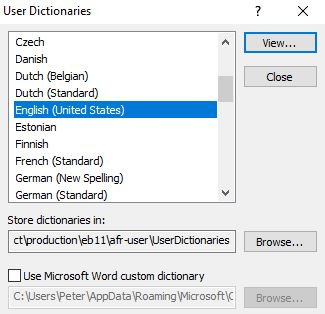
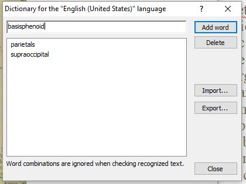

Add Dictionary Words
Teach AFR how to spell.
Note: Each
edition has its own dictionary, so be sure to use the one in the
afr-user folder of the edition you are working
on.
- Click
-
In the User Dictionaries dialogue box, select the
appropriate language and click View...
-
In the dialogue box that opens, type the word you want to add and click the Add
word button (or select a word you want to delete and click the Delete button).

- If the dictionary already contains the word you are trying to add, a warning message will be displayed.